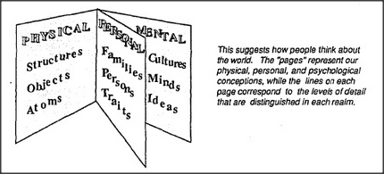

Our view of the body and the mind as separate entities is only one example of our many ways to view the world as divided into different realms. Imagine that a committee were commissioned to write down everything about the universe in a perfectly organized book.
Why do the gaps between the lines seem smaller than those that separate the pages? It is because we better understand what happens in between. We understand how walls relate to bricks because they represent closely related levels of organization. Similarly, we understand the relation between houses and walls. But it would be hard to cross the gap between houses and bricks without having enough intermediate concepts such as that of a wall. It simply isn't practical to think of the place where someone lives as a network of relationships among a million boards and bricks.
It's much the same in other realms; we need to be able to describe things at many levels of detail. We all belong to families or companies, and sometimes we can think of each group as nothing but a network of agreements and relationships. But when we need a larger view, as when thinking about the politics of an entire country, we cannot think effectively without regarding entire families or companies as though they were single objects in a different realm. The same applies to how we think about our minds. Even if you knew all the details of each little agent in your brain, your higher-level processes would still need coarser summaries.
Why is it easier to understand how walls relate to bricks, or families to individuals, than to understand how thoughts relate to things? It's not because there's any single mystery. It is because the level gap between walls and bricks is really much smaller than that between minds and brain cells. Suppose we actually had that wonderful encyclopedia of all possible knowledge, arranged according to the nearness of topics. There we'd find the essays on walls quite close to those about bricks. But the sections that cover the nature of thoughts would lie volumes away from the ones on the nature of things.